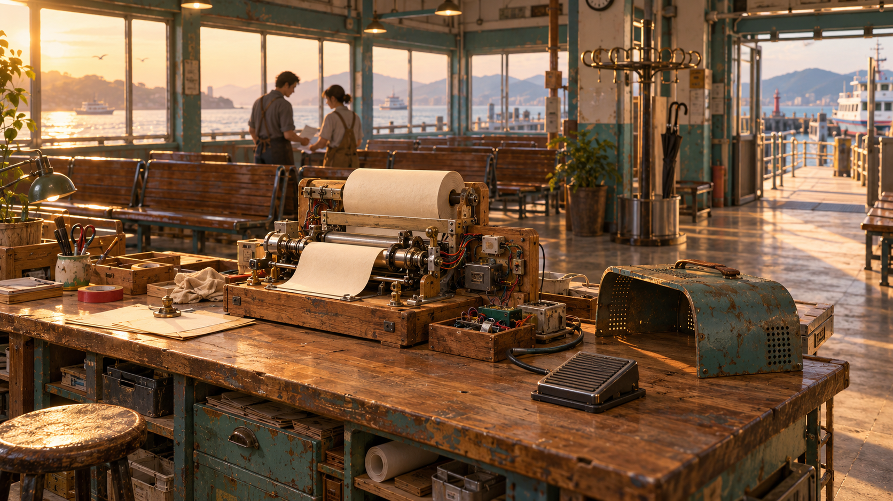

首日互動展示 · 可直接遊玩與閱讀完整企劃。此展示不代表完整遊戲已完成。

完整企劃與製作界線
以下是原交付企劃。當中的完整天數、支線與結局仍屬製作規格；本頁只實作標明的首日示範。
展開完整企劃 · 企劃 v1.2.1
《明日返修所》
Makers 閱讀參考之原創設計修訂 v1.2.1｜2026-10-16
一、閱讀來源與原創性界線
閱讀來源是 Cory Doctorow《Makers》。已讀官方介紹、創業發表會、Perry／Tjan 討論營運、遊樂網路與 Lester 談工具自主權等代表段落，未通讀全書。[1][2]
本案只保留動手發明、合作與經營等廣泛題材；因果主軸另設為「港務24日修繕交接、可維修模組、聲音編排、成年團隊的工作界線」。不沿用原作人物、台詞、專有設定，也不使用遊樂網路與娛樂企業反制、轉任企業研發或合作社結局鏈。這是設計層面的區隔，尚非通讀比對或法律保證，不稱作者認可的官方遊戲。
原作電子書為 CC BY-NC-SA 3.0。[1][3] 若後續仍採入受保護表達，非商業改編須署名 Cory Doctorow／Makers、連結原作及授權、標明修改、同授權散布，不能加限制授權權利的 DRM。免費不等於非商業，作品集若用於招攬業務須另核用途；商業改編需額外許可。[3] 本次只交企劃，公開前再查文本、美術與素材來源，不以更名或標 NC 代替核權。
二、定位、規模與核心目標
一句話：在24天內，把舊渡輪候船室的廢件做成三套聲光模組，並讓接班的人能修好它們；你還能替自己留下多少創作時間？
港務方將候船室改成夜班人員共用站。團隊取得限期修繕委託，可辦開放工作臺體驗補貼成本。維運商偏好省訓練的密封設備，接班員希望看得懂、拆得開；委託人要準時交付，設計師要作品完整。衝突來自維護責任與有限工時，不靠陰謀。
單人敘事經營＋模組裝配，給喜歡手作解題、輕經營與成人關係戲的玩家。完整約4–6小時，24工作日、5空間、16零件、3必要與5選做發明、6支線、4結局。現金維持營運，主要稀缺是時間和承諾。先桌面驗證，再適配手機直向；規模是提案，非工期承諾。
賣點：親手接好的模組真的發聲；編排能讓疲倦的人願意停留；驗收不是「能亮」，而是接班者照你的文件修得好。
三、循環與四種互動
每日看需求／承諾 → 排三個一般時段 → 裝配、修繕或編排 → 開放體驗／接班試修 → 晚間對話。所有操作可暫停。
1. 工作臺：把電源、感測、動作與外殼拖進六格插槽，接兩條訊號線。先顯示接頭、負載、聲量、拆修順序；目標同時滿足兩項需求。例：「會回信的雨」要踏板出紙且能安靜交談；慢速齒輪或隔音罩均可通過。每次確認裝配與台架實測占一格；失敗指出卡紙位置、保留素材，下格再修。不把電機知識當門檻。
2. 聲音編排：在四段時間軸放紙聲、燈光與留白，調停留時間，親自走過展件。資訊包括聲量、等待、通行寬度、訪客離場點。例：先看到空傘，再聽紙條落下，比持續播放雨聲更讓人停留。一次動線／聲音試演占一格；三名測試者至少兩人完成、出口暢通才可開放。失敗留下具體卡點，可縮短節拍或加旁路，兩者代價不同。
3. 工作會議：在研發、維護、接單、營業、休息間分三格，對要求選答應、拒絕或改期限。顯示已承諾工作與疲勞。例：阿澈想把下午留給新接頭，玩家需要他救場；事先換班可以，擅改會失去額外支援。拒絕工作不必受罰，失約才改變信任；不能用一句漂亮話洗掉累積紀錄。
4. 交接條款桌：調整交付數量、備件、保固工時、訓練及撤件條款。每次反提案列出資金與工時後果。例：三套永久裝置來不及，可提兩套加靜音空間，或改成可攜工具箱；須取得溫兆的明確變更確認，不能自己少交。目標是承諾團隊負擔得起的責任；談不攏仍可如實提交部分成果，後續義務不消失。
四、前二十分鐘
0–2分：候船室鐵門卡住。阿澈：「別再推，這次真的不是裝置藝術。」拆卡榫學檢查。
2–5分：接收可改作的報廢材料箱，羅晴提出「不用找原設計師也修得好」的需求。
5–9分：裝配回信機，教學卡紙與引導修正合計第一格；之後每次實測各占一格。共有電源、踏板、印字控制匣、慢速送料組、快速送料組、隔音罩六零件。前三件為共同核心；A配慢速組，B配快速組＋隔音罩。成功需觸發後3秒內出紙、聲量≤40、負載≤10且不卡紙，皆為遊戲數值。A為2.4秒／聲量36／負載6，B為1.2秒／35／8；兩種均過關。
9–12分：空傘、紙聲與留白組成兩段體驗，試走並修正，消耗第二格。
12–15分：首次開放消耗第三格，三位訪客回饋，基礎收入60，顯示扣固定成本30後餘額180。
15–18分：阿澈想研發，趙芮要整理交接資料；玩家安排明日三格。
18–20分：溫兆送來三套模組的驗收清單。玩家決定先查維修順序或聲量規格，不急著選最終路線。
五、六位成年人物
林沐，32，玩家／展覽技師。想留下完整作品，怕工作又被隨意撤掉；照顧觀眾卻常把朋友當救火隊。「你可以不喜歡這版，但別等開門才說。」
許澈，34，發明搭檔。想試新機構，怕永遠待命維修；主張好拆，自己的原型卻難懂。「我願意教。你先讓我有時間把它整理好。」
趙芮，43，營運合夥人。想準時付薪，怕再次拖欠同事；支持實驗卻把日程塞滿。「這張單不是不能接，是你答應了誰的下午？」
梁穗，29，聲音設計師。想保留作品節奏，怕被當背景音；愛合作卻不肯刪掉最喜歡的長段落。「那段安靜也是我做的，別直接跳過。」
溫兆，46，維運承辦主管。要新人接得住，怕開放後找不到人負責；理解手作價值卻傾向換密封成品。「我不是不信你會修，我得知道你不在時怎麼辦。」
羅晴，61，交接導師。想順利退下夜班，怕團隊永遠依賴她；要求文件卻習慣自己先把問題修完。「今天換你拆。我這次真的不伸手。」
六、三幕與六支線
第一幕「會動不算交得出去」第1–7日：取得委託、完成首件，發現羅晴能操作卻看不懂接線。第7日選統一接頭或保留特殊造型；後者保留表現力，但每件交接多一道辨識步驟。
第二幕「誰的下午可以借走？」第8–16日：候船室潮濕測試暴露裸露接頭不適合長放；新接單與保固準備搶時間。維運商報價方便替換的設備，團隊爭論該改結構、縮規格還是轉成可攜版本。第16日重談分工與可承諾工時，不靠單句選項消除失約。
第三幕「把手從工具上放開」第17–24日：由接班員照文件拆修，作者只能旁觀。最後按已批准範圍完成交接；若未通過，列出未完項與責任。收束是作品如何持續運作、團隊如何下班，而非擴張事業。
六支線，最遲觸發日依序6／12／14／15／18／20，觸發後有兩日：
①保留教學卡紙，羅晴請做故障範例：加進手冊可在試修顯示提示；只留作展品則增加一次體驗收入10。
②兩次漏署名，梁穗要求更正：補展牌與工作分配可續約；只付20獎金，她完成當期後離開。正常署名也能維持合作。
③兩次長隊，引出靜音場：重排時段改善停留；只限流會減收入。也可主動安排，不必先製造問題。
④分享圖紙後輪機師帶來手搖改件：採用能作停電示範但較慢；並陳兩版增加試修辨識步驟。
⑤信任低於40，阿澈邀看原型：共同研發一格可回升10；買現成件只解決展項。高信任也能主動共作，獎勵共用一次上限。
⑥第三幕羅晴拒絕再代修：安排新人試修可得驗收紀錄；請她救急能開門營業，卻不算接班完成。
七、四個結局與數值
「接得住的明天」：三套合格模組、三份不同交接包、三次接班實修、預留保固金60，依原範圍交付。團隊下班，接班者獨立運作。
「安靜也算完成」：取得兩套加靜音空間的變更確認，兩份交接包、兩次實修及保固金40。梁穗留下留白，團隊接受少做也是設計。
「作品裝進工具箱」：批准可攜方案，三套可攜驗收、三份交接包及一次教學實演、保固金45。可攜需重量≤12點、占格≤6、無固定外接線且鎖扣就位，三次模擬搬移復位後仍符合功能規格；每套測試一格，單純測試不改版本。為達標而改外殼或接線則更新實體版本，舊文件與驗收失效，須重做。空間恢復日常用途，模組交給夜班團隊帶著用。
「明確的未完」：任何狀態皆可提交部分成果與未完清單，尾聲交代續做、欠款及未歸還借物。只代表本階段故事結束，不自動解約、免責或把物件標成已還；無安全展件就只展示文件。
初始現金150、疲勞10、搭檔信任50。每天三個一般時段，每項工作占一格且疲勞＋5；休息一格－20，睡眠－10，疲勞限制0–100。三格用完且疲勞<80，可追加一次加班，只做個人裝配／實測／文件，疲勞＋15；不能加開營業、客戶修繕或強迫他人陪班。
營業每天最多一次、占一格，基礎毛收60／75／90依試演結果決定，事件增減另列，現規格單日營業最高100；固定成本每天只扣30。保底修繕每天一次、占一格、材料由客戶提供、毛收45。一般零件10–35；本案逐日示例的第二、三套材料各25。欠款不複利、不鎖主線，但不得欠款購物。
一套合格模組後另花一格、零金錢整理交接包；重複整理不多算。接班實修每套一格，最後一格可清點封箱整批交付物。拆解返七成可回收材料，須先撤展並斷開相關接線，不能保留同件展演副本；借物未獲同意不能拆。完整物件帳及24日可達路徑見附件。
八、介面美術與15分鐘Demo規格
桌面以工作臺、候船室剖面及日程為主。手機直向上半成果、下半操作卡，點兩端接線，提供拖放替代；字可放大，故障不只靠顏色，聲音有字幕與節拍提示。
美術以退役候船室的木作、潮痕、修補膠帶及手寫標籤呈現；修好一件，局部才亮起。紙聲、繼電器與腳步疊成節奏，故障抽掉一層，修復後合奏。這些是方向，待企劃確認才做畫面。
15分鐘Demo只含首日：一工坊、兩段動線、六零件、兩種有效裝法、三訪客、一次修正、首筆收支。沒有完整交接條款、全部24日或四結局。
玩家自審：能否無口頭教學完成裝配？說出一次編排如何改變感受？理解「自己會修」與「別人能接手」的差別？知道拒絕工作也能保持關係？五名初試者若三名只感到填表，先重做動手回饋。風險是唯一最佳配方、修繕變雜務、承諾變道德考卷；每題至少兩解，保留合理拒絕與清楚後果。
附件列事件互斥、一次性結算、欠款恢復與逐日可達驗證。目前是文字規則試算，尚未有可執行遊戲測試。企劃確認後才做介面美術，再核權並評估作品集動態頁；本次不產圖、不寫遊戲程式、不部署。
來源（2026-10-16核對）
[1] 官方全文與License：https://craphound.com/makers/Cory_Doctorow_-_Makers.html
[2] 官方介紹：https://craphound.com/makers/about/
[3] CC BY-NC-SA 3.0：https://creativecommons.org/licenses/by-nc-sa/3.0/
完整流程、經濟與驗收附件
《明日返修所》流程、經濟與驗收規格 v1.2.1
配套：makers_game.txt。以下是文字規則與算術試算，沒有執行遊戲程式，也尚未完成平衡或可用性實測。
一、此次修訂與原創性處理
v1.1主稿與附件均保留在同目錄，檔名帶v1.1_before_review。
移除「社區遊樂設施擴張→娛樂企業競爭→加入企業研發／合作社」因果鏈；改為「24日港務修繕交接→潮濕環境與人員工時暴露維護問題→變更交付範圍或如實提交未完項」。新結局關心接班能力、空間安靜程度、模組可攜性與責任清單。這不是將同一段情節換名。
比對範圍為官方介紹及主稿已列的代表段落，未通讀原作，不能宣稱完全排除相似表達或法律風險。公開前仍須核對作品集用途、來源、未讀章節及最終視聽素材。
二、每日時間與疲勞：唯一規則
day＝1–24；每日一般時段3格；每日營業次數、保底修繕次數、加班次數均在晨間歸零。
工作包括裝配與台架實測、聲音／動線試演、普通維護、營業、客戶修繕、文件整理、接班實修、借物歸還及交接封箱；各占一般時段1格、疲勞＋5。休息占1格、疲勞－20。主線對話、閱讀條款、看預覽、買已有報價的材料不耗格，也不增加疲勞；購買仍扣現金。
三格用完後，當下疲勞<80，才可選一次額外加班格。加班只能用於個人裝配與台架實測或文件整理，疲勞＋15，不能開店、接客戶修繕、還物、安排實修或要求搭檔陪班。不選加班也能完成所有路線。
晚間固定扣款後，睡眠使疲勞－10。每次變動後將疲勞限制在0–100；沒有未明示的夜間恢復、疲勞成功率或額外罰款。疲勞高仍能用一般時段工作與休息，避免進入無法恢復的鎖死狀態。
普通實測失敗也耗本次一格及對應疲勞，零件保留；下次實測再耗格。唯一例外是首日教學：初次卡紙與引導修正共算第一格，且全存檔只能獲此教學待遇一次。
三、收入、支出與保底恢復
初始現金150，搭檔信任50、疲勞10。首套M1材料是委託方已授權改作的報廢物，開局只領一次；M2與M3見證路徑的材料包各25。
一般零件報價10–35。購買前確認可用現金足額；不可欠款購物。固定成本每天只扣30，即使沒有開店亦扣，不隨工作格數或加班增加；此成本已含基礎場地、水電與約定薪資，沒有另藏一筆日費。
保底修繕每天最多一件，占一格，報酬45、材料由委託人提供；搭檔分開、展場關閉、零庫存、負現金時仍可由玩家獨立完成。它不能用加班格重接，也不能重播交付再領報酬。
營業每天最多一場，占一格。須有至少一件已通過測試且實體在展位的模組、合法通行與仍有效的試演配置。
基礎毛收：三名測試者恰有兩名完成＝60；三名均完成但仍有排隊＝75；三名均完成且無排隊超標＝90。這是該日唯一營業場次的總額，不是每位客人、每批或每格各給一筆。
事件可做一次性修正：故障範例改作展示的收入＋10；選擇限流時－15。若同場均適用，兩者相加。現行完整規格的單日營業額上限100；同日加做保底修繕，工作收入上限145，之後固定扣30。沒有其他可重複的一次性劇情金錢獎勵。
現金負值代表欠款，無利息、不阻主線；保底修繕45減日費30，每天至少能回補15。日曆照常推進，不能停日刷錢。第24日仍欠款可以結束故事，但欠款保留在尾聲責任表，不被結局清除。
四、實體物件、庫存與交接文件
首日回信機的可繪製規格：六零件為電源、壓力踏板、印字控制匣、慢速送料組、快速送料組、隔音罩。工作臺六槽依序標為電源、輸入、印字核心、送料、隔音、備用；快慢送料組互斥，只能擇一放第四槽。電力由插槽自動連接，玩家要接兩條有方向訊號線：踏板輸出→印字匣觸發輸入，印字匣送料輸出→送料組啟動輸入。端口以文字與形狀區分，不能只靠顏色。
共同核心為電源＋踏板＋印字匣。A裝法再加慢速送料組，四槽、重量8點、負載6、聲量36、2.4秒出紙。B裝法再加快速送料組與隔音罩，五槽、重量10點、負載8、聲量35、1.2秒出紙。成功條件是訊號線完整、只裝一個送料組、觸發後3秒內完成出紙、負載≤10、聲量≤40、零卡紙；數字均是遊戲模擬單位，非真實電機或聲學規格。
快速組不加罩的聲量為55，因此在聲量項失敗，不是隱藏扣分；缺任一訊號線會顯示停在哪個端口。慢速組可以加罩，仍可通過，但耗多一個可用零件，沒有額外獎勵。Demo主要展示A、B兩種代表解法，並非故意封鎖所有其他有效組合。
開局六零件各一個，選完未用零件仍在庫存。紙張是固定成本內耗材。首日卡紙為一次性的「出紙口擋片未取下」，A、B皆會遇到；引導取下後與當次裝配合計一格，此後沒有為逼玩家改配方而隨機卡紙。成功畫面顯示零件配置、兩條訊號路徑、出紙動畫與四項實測指標，讓介面畫面能對應玩法。
每個實體有唯一物件ID、來源／權利、所在位置、投入材料、接線、實測結果及文件版本。位置互斥：工作臺、倉庫、展位、交接箱、已移交、已歸還、已拆解；不允許同一ID同時展出與拆解。
裝配從庫存扣材料後才生成新物件。裝配／台架實測一格，通過後可以安排聲音／動線試演一格。搬到展位不消耗另一格，但要重新檢查接線與通行；曾改動輸出、動線或控制機構，原試演合格標記立即失效，重試後才能營業。
拆解的確認需列明影響：先原子性撤展、斷開此件全部接線、撤銷依賴它的試演有效性與交接合格標記，再返料、將物件標為已拆解。失敗或取消時整筆回復，不只返料卻保留展品。
返料為原投入可回收材料總值的70%，向下取整，記為只能換相容回收零件的材料點；不能換現金。已拆解物不可再次返料，開局贈品不返購物點。拆裝循環因此只損耗，不增加庫存價值。
借物預設只能展示，沒有出借人明確同意不能拆解或作改作原料。歸還一批占一格，列出每個ID，收到劇情簽收才改「已歸還」。放進歸還箱不算完成；晚交或損壞另記責任，無任何結局自動補簽收。
每套通過台架測試的不同模組，可花一格、零金錢做一份交接包，包含接線、拆修順序、常見故障和備件表；三份交接包是三個不同合格模組的文件，不是同份複製三次。
實體版本與展場編排版本分開記錄。只改外部播放順序或停留節奏，不改模組電路、韌體及拆修方式時，只重做展場試演，不使維修文件過期。文件必須對應目前實體版本。改造或拆解會令相依文件「待更新」；重新整理仍花一格，但不額外增加完成份數。選統一接頭可簡化辨識；特殊接頭仍可通過，在同一實修格內多一道核對步驟，不偷偷多扣一格。
接班實修每套占一格、零金錢，含拆裝、復原與接線安全核對；正確復原且未改規格即可回原展位沿用既有試演配置。接班員依文件完成才記該模組合格；讓羅晴代修只恢復營業，不增加實修紀錄。實修紀錄按物件版本保存，不重複領取。
交接前還需一格清點封箱，可把當次方案的全部模組及文件一起封箱；此格不直接轉移所有權。第24日晚確認最終方案與簽收後才原子性移交；封箱後的模組不可再營業使用，拆箱則撤銷封箱完成標記。
可攜驗收的最小規則：每套必須已通過目前實體版本的台架功能測試；總重量≤12遊戲重量點、占用槽數≤6、沒有仍連到地板／牆面／固定設備的外接線，全部收納鎖扣已扣妥。一次可攜測試模擬三輪「斷電→收納→搬移→復位→啟動」，三輪都無鬆脫，且沿用該模組原本的聲量、反應時間、負載與輸出成功條件。M1直接使用上列回信機門檻。標準版M2為重量10點、五槽；M3為11點、六槽。三套標準材料包均含快拆接頭與收納鎖扣，因此既有標準版可直接接受驗收，不必先購買改造。這是既有工作臺的一張檢查卡，不另增關卡。
每套可攜測試占一格，歸類為個人台架實測，可使用一般格或符合限制的加班格；失敗亦耗一格，保留零件並指出是哪項、哪一輪不符，不以隱藏亂數判定。快拆接頭的正常拔插與復位、單純稱重或測試不改實體版本；合格報告附加到該版本交接包，不強迫重寫同份文件。
若為達標而更換外殼、加鎖扣、剪改接線、換零件或改韌體，屬實體改造：占裝配一格並增實體版本，同步撤銷舊台架／可攜結果、交接包有效性與接班實修紀錄。需購入的鎖扣10、快拆接頭15、替換外殼20，購前明示成本並按一般購物規則扣款；只移除自有非必要零件不另收材料費，但仍耗改造格。先在新版本完成台架測試、重驗受影響的展場配置，再整理文件、做可攜測試及該路線必要的教學／實修；測試通過本身不再增版，避免「驗收讓文件過期」死循環。暫時從展位移到工作臺測試時不能同時營業展示；回展位須復原原配置與安全核對。
五、事件、承諾及方案互斥
承諾以唯一ID記錄：待辦／履行／失約／協議取消。履行＋5信任、失約－10，一次結案只結算一次；及早協議取消不扣分。重新看對話、讀取已完成事件不刷分。
每支線是未觸發／進行／完成A／完成B／錯過，只有一個終態。最遲觸發日依序6、12、14、15、18、20，截止在觸發日後第二日晚；沒有要等到第25日的支線。
S1 故障範例：保留教學卡紙後，可選文件提示或下一場營業＋10；一旦消耗金錢效果即清除。
S2 署名：兩場結算漏署名才出現申訴；補正分工留任，單付20獎金則當期後離開。持續署名者正常留任，不需先犯錯。
S3 靜音場：兩場長隊可觸發，也可直接主動試做；試做與後續營業各占其本來的一格。限流收入－15清楚列在開門預覽。主動入口與事件入口共用完成標記。
S4 手搖件：分享一份圖紙後收到改件；選一版或並陳兩版，修改須重新實測、更新文件，不憑免費事件跳過驗收。
S5 共同原型：低信任邀約或高信任主動提出都可做，共用一次＋10獎勵；占一格一般工作，買替代件不加信任。
S6 放手試修：羅晴要求新人試修；完成該模組正式實修便結案，不額外再花第二格。請羅晴代修占一格維護，可營業但支線不算新人接手成功。
方案scope互斥：原三套／已批准兩套加靜音空間／已批准可攜方案。預覽、送出申請與批准是不同狀態。只有溫兆在劇情中確認變更才替換有效scope；原約內容與變更紀錄保留。
第8日潮濕問題主線對話自動提供調整方向。第16日起可提出變更：兩套方案須做一次靜音空間試演；可攜方案須各套通過可攜測試，每套一格。承辦確認對應條件後批准，不用猜語氣，也沒有另一個隱藏好感門檻。最遲第23日辦理，未獲批准仍依原範圍記錄責任。
六、結局與持續責任
第24日晚依序：工作完成→固定成本扣款→檢查合格方案與簽收→選結局→睡眠／尾聲。沒有自動覆蓋玩家選擇的隱藏優先順序。
接得住的明天：有效scope為原三套；三套當前版本合格、三份交接包、三次接班實修、封箱清單完成、現金≥60。確認後把60由營運現金轉為保固預留金，原子性簽收並移交。
安靜也算完成：有效scope為已批准兩套方案；兩套、兩包、兩次實修、靜音試演與封箱完成、現金≥40，確認時預留40。
作品裝進工具箱：有效scope為已批准可攜方案；三套通過可攜測試、三包、一次集體教學實演與封箱完成、現金≥45，確認時預留45。教學一格且不能由文件閱讀代替。
明確的未完：永遠可選。逐件列「已驗收移交／已做未驗／未做／借物待還」，列現金欠款、未到期保固、有效委託與待協議項；現場階段結束不代表任何法律或合約義務自動終止。若方案未獲批准，不能把少交或換形式寫成已履約。若有實際違約，尾聲保留相應後果或後續處理，不自動獲得原諒。
正向結局也保留尚未履行的保固與借物責任。預留金不是已花掉的罰金；記為獨立餘額，不因重看尾聲再次扣款。故事不要求所有私人關係都和好才允許交接。
七、逐日合法見證路徑：三套完整交接
採開局標準防潮接頭、M1材料開局一次發給，D3與D8各買25材料；D7確認維持現有接頭規格，因此D8裸露接頭風險不要求這條路徑返工。開局另借有兩張備用工作椅，不屬於模組或必要動線，安排D19實際歸還。全程不加班、不接有材料成本的選做件、不領支線金錢獎勵。營業一律採最低基礎毛收60，無限流。R＝一格保底修繕45；O＝一格營業60；休＝一格休息。每行恰好三格。
D01：M1教學裝配實測／首場動線試演／O；日終現金180，睡眠後疲勞15。
D02：M1交接包／R／休；現金195，疲勞0。
D03：買材料25並裝配實測M2／R／休；現金185，疲勞0。
D04：M2加入動線並試演／O／休；現金215，疲勞0。
D05：M2交接包／R／休；現金230，疲勞0。
D06：完成已答應的例行維護／R／休；現金245，疲勞0。
D07：標示統一接頭與複查／O／休；現金275，疲勞0。
D08：買材料25並裝配實測M3／R／休；現金265，疲勞0。
D09：M3加入動線並試演／O／休；現金295，疲勞0。
D10：M3交接包／R／休；現金310，疲勞0。
D11：靜音節奏試演／O／休；現金340，疲勞0。
D12：清點備件與標籤／R／休；現金355，疲勞0。
D13：不改硬體的訪客節拍試演／O／休；現金385，疲勞0。
D14：非破壞式維修檢查／R／休；現金400，疲勞0。
D15：試演現有配置／O／休；現金430，疲勞0。
D16：例行維護／R／休；現金445，疲勞0；晚間會議確認原三套方案，不耗格。
D17：試演現有配置／O／休；現金475，疲勞0。
D18：接班用備件清點／R／休；現金490，疲勞0。
D19：借物歸還並取得簽收／O／休；現金520，疲勞0；歸還的借物不屬於三套模組與動線必要物。
D20：M1接班實修／R／休；現金535，疲勞0。
D21：M2接班實修／O／休；現金565，疲勞0。
D22：M3接班實修／R／休；現金580，疲勞0。
D23：三套最終配置試演／O／休；現金610，疲勞0。
D24：三套及三包清點封箱／R／休；現金625，疲勞0；晚間驗收簽收，轉保固預留60後營運現金565，預留金60。
核算：本見證表O為11場、R為13件；660＋585＋初始150－24日固定成本720－材料50＝625。
上述排程刻意留多個複查格，不是假設每天無限營業或免費整理圖紙。它證明在這份寬鬆初始經濟規格下存在可達路徑，不代表難度已平衡，也不保證任意選擇都能全交付。
八、正式製作前必測
1. 所有主線節點分別帶入欠款、零材料、搭檔暫停與展場關閉，保底修繕及未完結局仍可用。
2. 3格未用完不能加班；已加班不能再加；疲勞79可加、80不可加；加班不能營業／修繕／實修。收入不隨客流動畫重複觸發。
3. 當日營業與修繕各一次；重看、取消、讀檔不多扣日費、不重領材料或收入。
4. 拆解已展出模組，同步清除接線、試演與交接可用標記；已返料物件不可再次返料，也不可移交。
5. 借物無改作授權不可拆；歸還無簽收不能變已還；選任何結局都不自動刪除待還與損壞責任。
6. 同物件重複整理文件只更新版本；三份文件必須對應三個不同當前合格物件。
7. 變更申請未批准不能選對應完成結局；完成結局預留金不足顯示缺項；未完結局仍能誠實列責任。
8. 已封箱模組不能再營業；拆箱、修改、重測與重新封箱的狀態與耗格一致。
9. 各完成結局另跑至少一條完整24日路徑；目前只提供原三套方案逐日見證，另外兩條不得對外聲稱已經實測。
10. 擴大字級、鍵盤與手機點選模式下，條款、金額、返回及確認按鈕都可見。
版本與回饋
2026-10-20 · 網頁展示 public.1：首日互動與完整企劃。此版本不是 Android／iOS 商店發行版。
未收集姓名、照片、聯絡資料或遊玩紀錄。示範只在目前頁面記憶體內運作，重新載入會重置。此展示尚未提供線上問題回報表單。